The AttributeCopier and AttributeRenamer transformers can only set an attribute value where the attribute doesn't exist.
After completing this lesson, you'll be able to:
Creating attributes and setting a value are the primary attribute functions used within FME. When an attribute is created, its value can be set in several ways.
The transformers capable of creating an attribute - and setting its value - are:
The AttributeCopier and AttributeRenamer transformers can only set an attribute value where the attribute doesn't exist.
We'll concentrate on the AttributeManager for most operations, so here is a quick overview of that transformer.
The AttributeManager parameters dialog has several fields: Input Attribute, Output Attribute, Attribute Value, and Action. Uniquely among attribute-handling transformers, it is automatically filled in with the details of the attributes connected to it:

The user can set the action field, but the transformer will also set it automatically if you change the other fields.
If you enter a new attribute name into the Output Attribute field, FME will create it in the output.
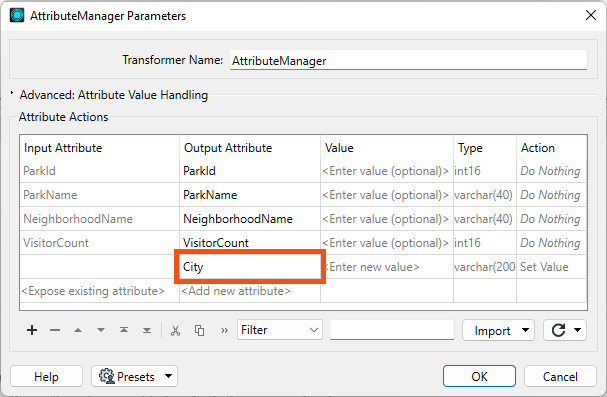
The text <Add new Attribute> highlights where you can create a new attribute. By default, when the Attribute Value field is empty, a new attribute has no value.
A fixed (or constant) value for an attribute can be created by simply entering a value into the Attribute Value field:

Here, for example, a new attribute called City is given a fixed value of Vancouver. The transformer will set that value for every feature entering the transformer.
The user has also assigned a fixed value to the existing attribute NeighborhoodName. They gave it the value "Kitsilano." Notice how entering a value into that field automatically changes the Action field from "Do Nothing" to "Set Value."
The AttributeManager, AttributeCreator, and some other attribute transformers that can set values will overwrite existing values. If you are creating attributes and setting values, they will also silently overwrite those attributes. For example, say your data already has an existing attribute called UpdatedDate, and every feature has a value of 1698254789. Then, you create a new attribute called UpdatedDate using an AttributeCreator and set the value to the current date time, e.g., 11-02-2023. FME will overwrite the old attribute with this new value. If you don't see the values you expect for an attribute, please ensure your transformers are correctly configured.
Besides constant attribute values, FME also allows you to construct values using string manipulation and arithmetic calculations. This procedure is achieved by clicking on the arrow in the Attribute Value field and selecting either Open Text Editor or Open Arithmetic Editor:

This method is advantageous because the attribute no longer needs to be a fixed value; it can be constructed from a mix of existing attributes, parameters, and constants.
The Text Editor - as you would expect - allows you to construct a text value. It includes all the usual string-handling functionality you need, such as concatenation, trimming, padding, and case-changing.
The Text Editor looks like this:
Here, the user constructs an address string by concatenating various existing attributes with some fixed characters (the commas).
Notice the menu on the left-hand side. Existing attributes are listed here, and you can add them to the string by double-clicking them. Also, notice the other menu options. Maybe the most important for text are String Functions:
These functions can be used to manipulate strings. For example, here, the user is making sure the attributes being used are trimmed when used:

This would turn
PSTLCITY: Vancouver
PSTLPROV: BC
POSTALCODE: V5V 0A1
into
ADDRESS: Vancouver, BC, V5V 0A1
After processing, FME trimmed the leading and trailing whitespace and concatenated the separate attributes with commas.
Notice the Date/Time functions in the Text Editor, which can be used to manipulate dates, times, and datetime strings, including TimeZone components.
The Arithmetic Editor is much the same as the Text Editor, except that FME evaluates whatever is entered into the dialog as an arithmetic expression and returns a numeric result:

Here, the user calculates the monthly number of visitors to a park by dividing the annual number of visitors by 12 (twelve). As with the Text Editor, existing attributes and arithmetic functions are obtained from the menu on the left-hand side.
The contents of the Arithmetic Editor must form an arithmetic expression that can be evaluated mathematically.
One other item in the menu of both Text and Arithmetic Editors is the FME Feature Functions:

These are functions that use the very heart of FME's functionality. They are the building blocks that transformers are built upon, essential functionality that can return values to the editor.
For example, the @Area() function returns the area of the current feature (assuming it is a polygon), while @CoordSys() returns the coordinate system. These functions are equivalent to using the AreaCalculator and CoordinateSystemExtractor transformers.
Some functions return strings; others return numeric values. Therefore, the available functions vary depending on whether you are using the Text or Arithmetic Editor is being used. In the screenshot above, the Text Editor functions are on the left, and the Arithmetic Editor functions on the right. The Text Editor can use either text or numeric values; the Arithmetic Editor can only ever accept numeric values.
FME Feature Functions are helpful because they allow you to build processing directly into the AttributeManager instead of using a separate transformer.
Integrated Text and Arithmetic Editors provide an excellent benefit for workspace creation. They allow attribute-creating functions to be carried out directly in a single transformer.
For example, the AttributeManager Text Editor can be used as a direct replacement for the StringConcatenator and ExpressionEvaluator transformers.
The AttributeManager could also replace the StringPadder and AttributeTrimmer transformers, albeit with less user-friendliness. If FME Feature Functions are used inside the editor, this transformer could also technically replace transformers such as the AreaCalculator, LengthCalculator, DateTimeStamper, and many more.
This feature is usually a good thing. Workspaces will be more compact and well-defined when as many peripheral operations as possible are directly integrated into a single transformer. However, because an AttributeManager can carry out many operations, it is also critical to use best practices and ensure it has the proper annotation.
If an AttributeManager is not annotated correctly, it isn't possible to determine what action it carries out from looking at the Workbench canvas!
Jennifer needs to to create and construct some new attributes to match the output schema:
Jennifer opens the starting workspace (C:\FMEData\Workspaces\TransformAttributes\creating-setting-and-constructing-attributes.fmw) in FME Workbench (2025.0.1 or later).
Jennifer chose to use an AttributeManager for both tasks in this bookmark:
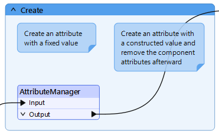
She could have used an AttributeCreator here, and that would be completely valid. However, because she'd like to remove some of the attributes used to construct a new attribute, she can accomplish that in a single AttributeManager, rather than an AttributeCreator and then another AttributeRemover.
She opens the AttributeManager's parameters.
First, she wants to move the newly-renamed province attribute down in order, so she clicks its row to select it and then clicks the Move Down button:
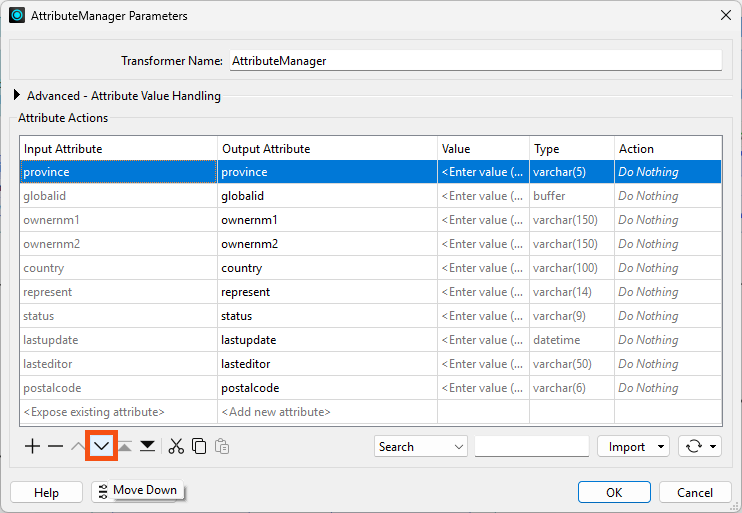
She moves it so it is below ownernm2:
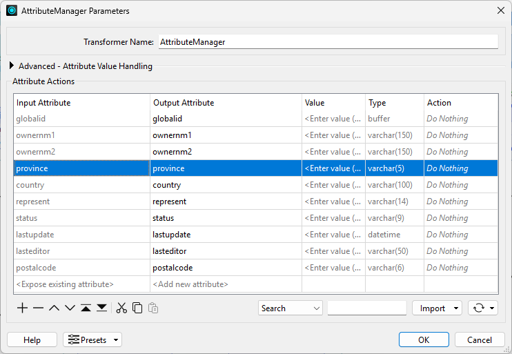
Next, she'd like to create a new attribute, provider, and set it to Safe Software.
She clicks in the table cell in the Output Attribute column that says <Add new attribute>. Then she types in the new attribute name: provider:
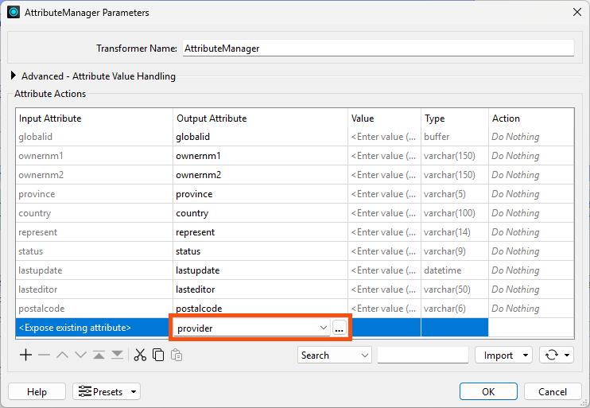
Then, she sets the value equal to Safe Software by tying it in the Value column for the provider row:
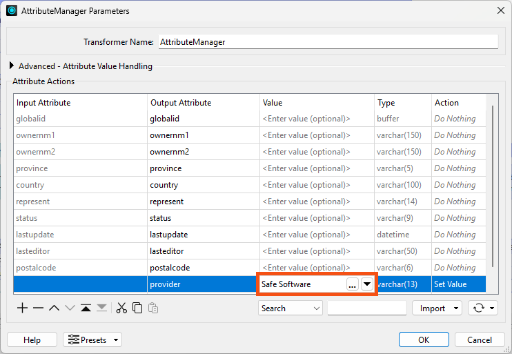
This will set the provider attribute value to Safe Software for every feature that enters this transformer.
While setting attributes to a single, fixed value is sometimes required, more often Jennifer finds herself setting an attribute value that will vary by feature.
She wants to do this for a new attribute called updateddate. She adds this new attribute by clicking on <Add new attribute> again and typing:
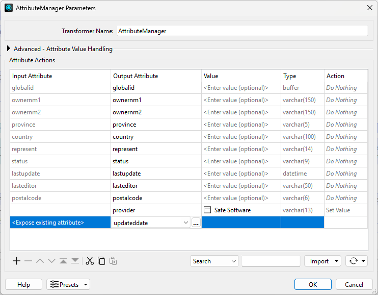
Then she clicks the drop-down arrow in the Value cell for that row and opens the Text Editor:
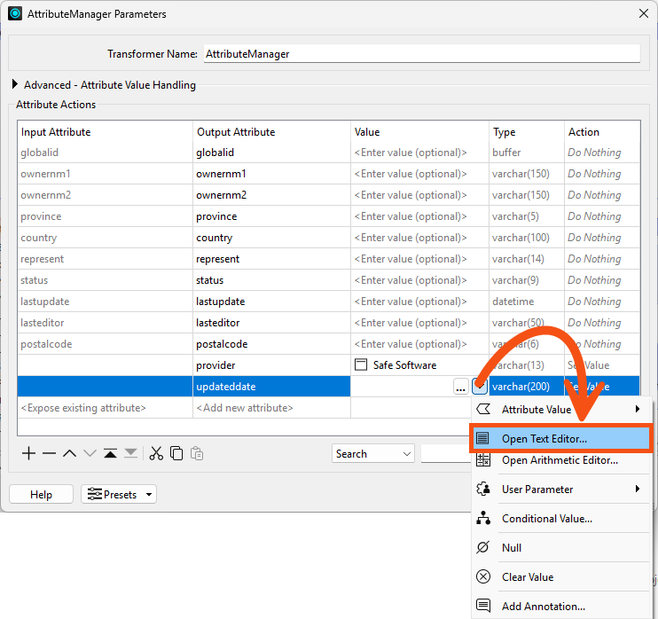
In the Text Editor, she browses for the feature function she wants. It is located under Date/Time Functions > DateTimeNow. She double-clicks it to insert that function into the Text Editor.
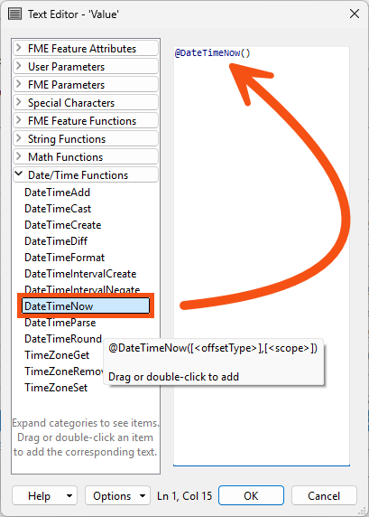
You can also manually type these functions, but we recommend adding them using the panel on the left, as it can help you avoid typos.
Next, Jennifer would like to create a new attribute constructed using other attributes. After creating it, she'd like to clean up by removing the attributes she used.
She wants to concatenate ownernm1 and ownernm2 into a new attribute called owners and then remove those attributes afterward.
In the AttributeManager parameters dialog, she creates a new attribute called owners. In the Attribute Value column for this attribute, she clicks the drop-down arrow and chooses Open Text Editor.
In the text editor, she opens the FME Feature Attributes section on the left-hand menu. She locates the ownernm1 and ownernm2 attributes and double-clicks them, in turn, to add them to the editor window. In the editor window, she clicks between the two attributes and presses the spacebar to add a space character.
@Value(ownernm1 ) @Value(ownernm2)
She can either ignore the trailing space generated on records without a second owner (it won't affect the output's usefulness) or use a TrimRight function to remove it:
@TrimRight(@Value(ownernm1) @Value(ownernm2))
She clicks OK to close the editor dialog.
Now that we have the owners field, she can remove the attributes ownernm1 and ownernm2. However, the order of operations is now essential. The AttributeManager must create owners in the parameters dialog before removing ownernm1 and ownernm2.
To do so, she clicks the newly created owners field. Then, she uses the Move Up button on the dialog to move it above ownernm1.
Then she sets the Action for ownernm1 and ownernm2 to Remove. The dialog will now look like this:
She clicks OK to close the AttributeManager parameters.
So, to summarize, the order of the rows in AttributeManager reflects both the order of any attribute modifications and the order of the attributes on the output features. If you are not able to conduct operations and keep the attribute order you want, you can use another AttributeManager to change the order, or perhaps more efficiently, just set the attribute order on your writer feature types.
She uses Run To This on the PostalAddress writer feature type:
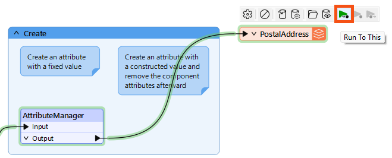
She inspects the written data. She confirms the attributes meet her requirements:
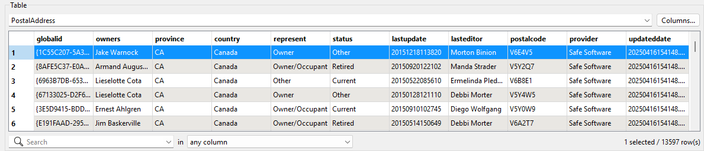